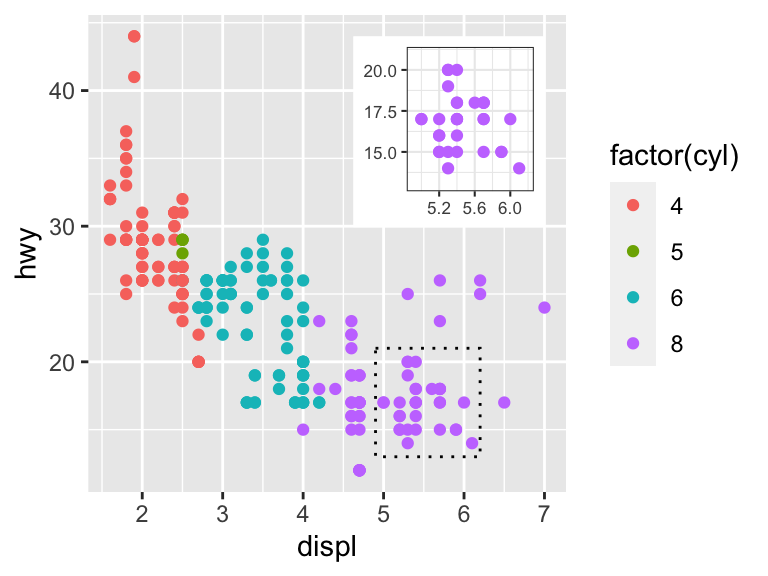
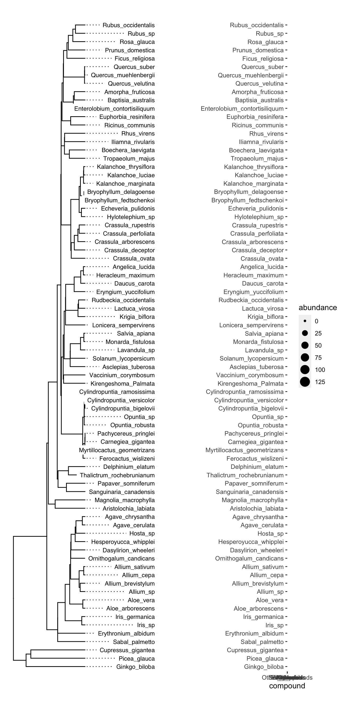
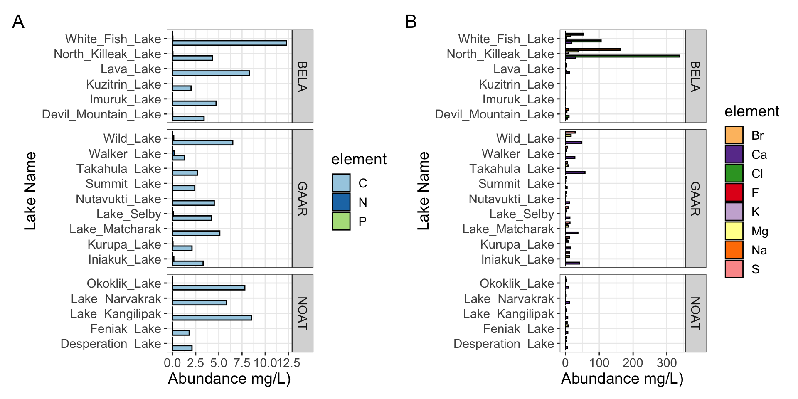
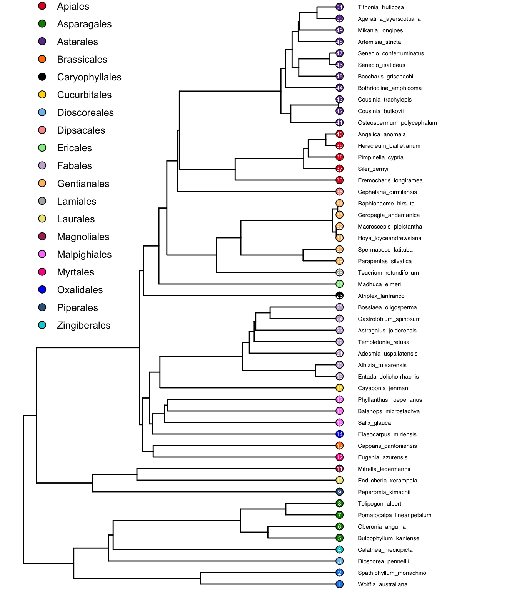
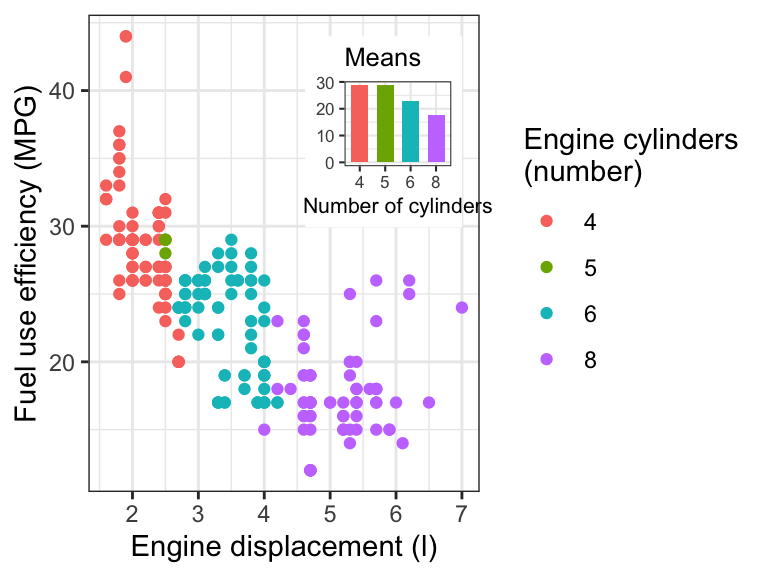

figures & captions
A high quality figure is one in which, for example, axes tick labels do not overlap but also fill the space available to them, colors are used, raw data is plotted (if possible), axes labels are customized, an appropriate theme is chosen, and geoms are chosen carefully. The plots should be visually attractive and professional.

zoomed figures
Zoom in on certain plot regions
p <- ggplot(mpg, aes(displ, hwy, colour = factor(cyl))) +
geom_point()
data.tb <-
tibble(x = 7, y = 44,
plot = list(p +
coord_cartesian(xlim = c(4.9, 6.2),
ylim = c(13, 21)) +
labs(x = NULL, y = NULL) +
theme_bw(8) +
scale_colour_discrete(guide = "none")))
ggplot(mpg, aes(displ, hwy, colour = factor(cyl))) +
geom_plot(data = data.tb, aes(x, y, label = plot)) +
annotate(geom = "rect",
xmin = 4.9, xmax = 6.2, ymin = 13, ymax = 21,
linetype = "dotted", fill = NA, colour = "black") +
geom_point() 
inset figures
plot insets
p <- ggplot(mpg, aes(factor(cyl), hwy, fill = factor(cyl))) +
stat_summary(geom = "col", fun = mean, width = 2/3) +
labs(x = "Number of cylinders", y = NULL, title = "Means") +
scale_fill_discrete(guide = "none")
data.tb <- tibble(x = 7, y = 44,
plot = list(p +
theme_bw(8)))
ggplot(mpg, aes(displ, hwy, colour = factor(cyl))) +
geom_plot(data = data.tb, aes(x, y, label = plot)) +
geom_point() +
labs(x = "Engine displacement (l)", y = "Fuel use efficiency (MPG)",
colour = "Engine cylinders\n(number)") +
theme_bw()
image insets
Isoquercitin_synthase <- magick::image_read("https://thebustalab.github.io/integrated_bioanalytics/images/homology.png")
grobs.tb <- tibble(x = c(0, 10, 20, 40), y = c(4, 5, 6, 9),
width = c(0.05, 0.05, 0.01, 1),
height = c(0.05, 0.05, 0.01, 0.3),
grob = list(grid::circleGrob(),
grid::rectGrob(),
grid::textGrob("I am a Grob"),
grid::rasterGrob(image = Isoquercitin_synthase)))
ggplot() +
geom_grob(data = grobs.tb,
aes(x, y, label = grob, vp.width = width, vp.height = height),
hjust = 0.7, vjust = 0.55) +
scale_y_continuous(expand = expansion(mult = 0.3, add = 0)) +
scale_x_continuous(expand = expansion(mult = 0.2, add = 0)) +
theme_bw(12)
ggplot() +
annotate("grob", x = 1, y = 3, vp.width = 0.5,
label = grid::rasterGrob(image = Isoquercitin_synthase, width = 1)) +
theme_bw(12)
composite figures
Many high quality figures are composite figures in which there is more than one panel. Here is a simple way to make such figures in R. First, make each component of the composite figure and send the plot to a new object:
color_palette <- RColorBrewer::brewer.pal(11, "Paired")
names(color_palette) <- unique(alaska_lake_data$element)
plot1 <- ggplot(
data = filter(alaska_lake_data, element_type == "bound"),
aes(y = lake, x = mg_per_L)
) +
geom_col(
aes(fill = element), size = 0.5, position = "dodge",
color = "black"
) +
facet_grid(park~., scales = "free", space = "free") +
theme_bw() +
scale_fill_manual(values = color_palette) +
scale_y_discrete(name = "Lake Name") +
scale_x_continuous(name = "Abundance mg/L)") +
theme(
text = element_text(size = 14)
)
plot2 <- ggplot(
data = filter(alaska_lake_data, element_type == "free"),
aes(y = lake, x = mg_per_L)
) +
geom_col(
aes(fill = element), size = 0.5, position = "dodge",
color = "black"
) +
facet_grid(park~., scales = "free", space = "free") +
theme_bw() +
scale_fill_manual(values = color_palette) +
scale_y_discrete(name = "Lake Name") +
scale_x_continuous(name = "Abundance mg/L)") +
theme(
text = element_text(size = 14)
)Now, add them together to lay them out. Let’s look at various ways to lay this out:
plot_grid(plot1, plot2)
plot_grid(plot1, plot2, ncol = 1)
plot_grid(plot_grid(plot1,plot2), plot1, ncol = 1)
exporting graphics
To export graphics from R, consider the code below. The
plot <- ggplot(data, aes(x = x, y = y)) + geom_point()
png(filename = <path_to_file_you_want_to_create>, width = 8, height = 8, res = 600, units = "in")
plot
dev.off()captions
- Title - an overall description of the what is shown
- For each subplot:
- The type of plot (line plot, bar chart, etc.)
- Describe what is plotted as y vs x in words.
- Describe what each bar, point, or error bar represents.
- If applicable, describe the number of independent samples or measurements (sometimes called “replicates”) that underlie a given geometric feature or summary statistic.
- Describe where the data are from.
- Avoid abbreviations, but if you do use any, specify what they mean.
An example:
(plot1 + plot2 + labs(caption = str_wrap("Figure 1: Carbon, nitrogen, and phosphorous in Alaskan lakes. A) A bar chart showing the abundance (in mg per L, x-axis) of the bound elements (C, N, and P) in various Alaskan lakes (lake names on y-axis) that are located in one of three parks in Alaska (park names on right y groupings). B) A bar chart showing the abundance (in mg per L, x-axis) of the free elements (Cl, S, F, Br, Na, K, Ca, and Mg) in various Alaskan lakes (lake names on y-axis) that are located in one of three parks in Alaska (park names on right y groupings). The data are from a public chemistry data repository. Each bar represents the result of a single measurement of a single analyte, the identity of which is coded using color as shown in the color legend. Abbreviations: BELA - Bering Land Bridge National Preserve, GAAR - Gates Of The Arctic National Park & Preserve, NOAT - Noatak National Preserve.", 90))) + plot_annotation(tag_levels = 'A') +
plot_layout(widths = c(1.1, 3), guides = 'collect') &
theme(legend.position = 'right')
further reading
plot layout
One option for plot layout, patchwork. This one is quick and simple.
patchwork, for plot layout
Another option for plot layout is cowplot. Cowplot is a bit more complicated, but is more versatile.
cowplot on Github